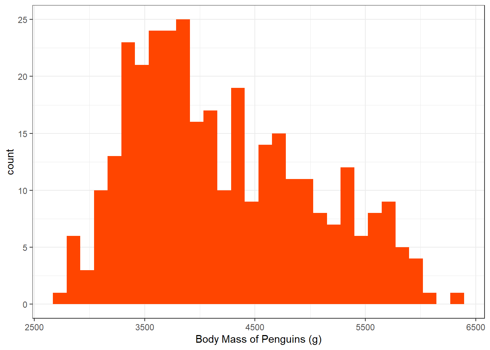
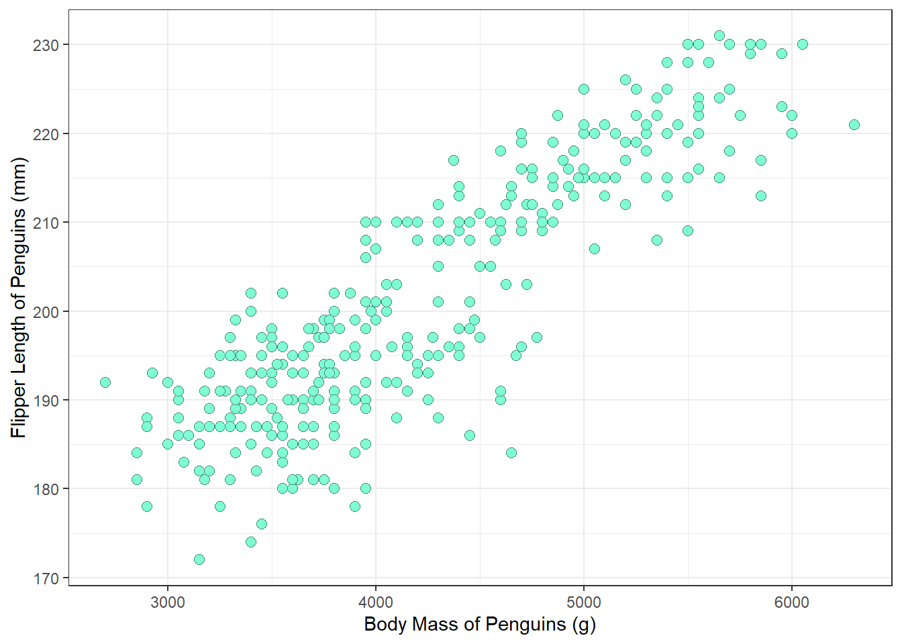
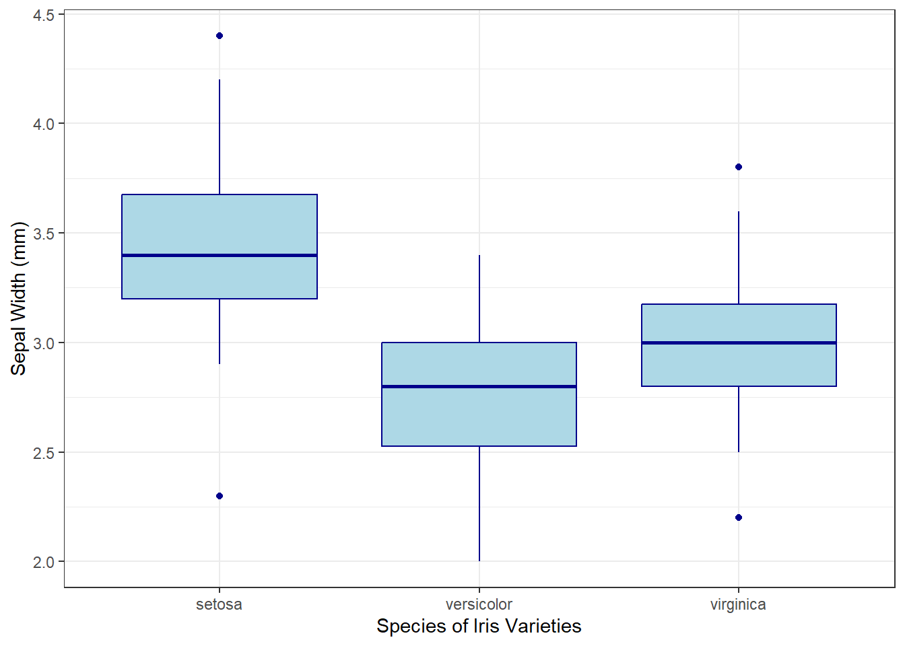
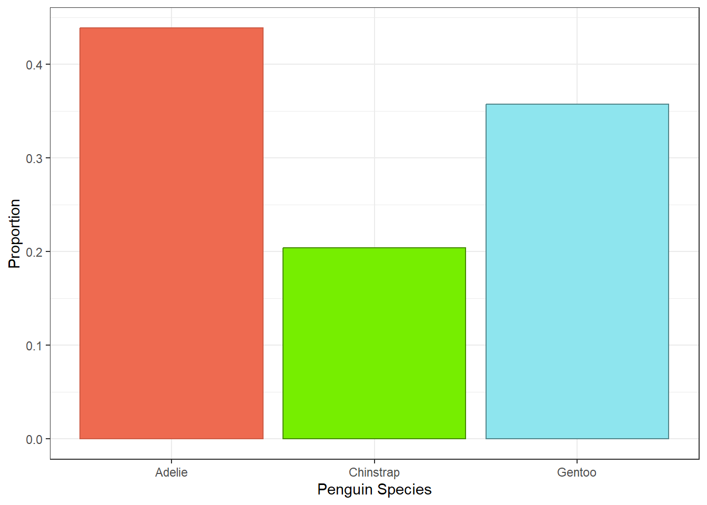
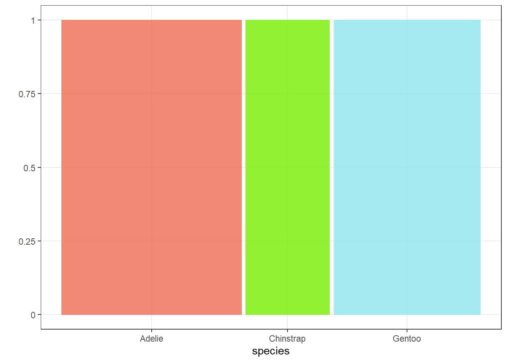
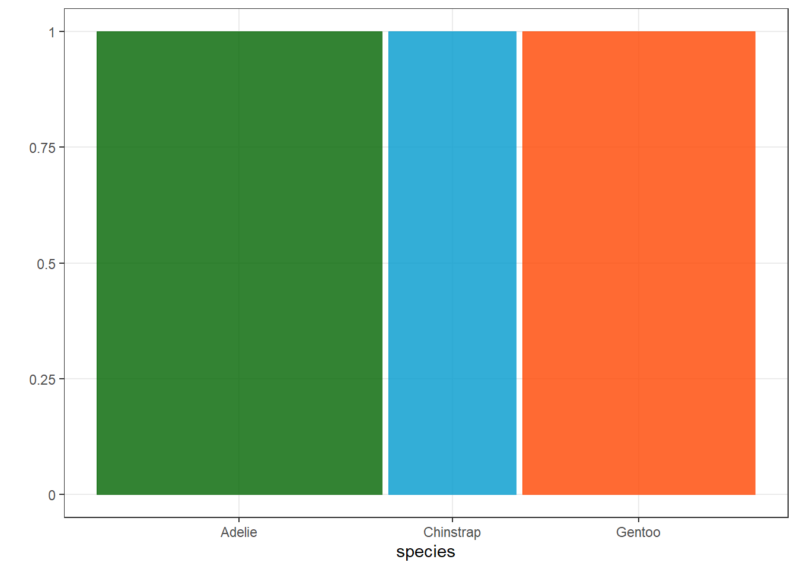

install.packages("palmerpenguins")2 Getting to Know Your Data
2.1 Variables
Before we jump into the world of statistical testing, let’s take a moment to refresh our understanding of what a variable is, the different types of variables, and how we can describe them using numerical and graphical methods.
So what is a variable?
The Australian Bureau of Statistics defines a variable to be “any characteristic, number, or quantity that can be measured or counted.”
If you’ve ever tried dieting, you might have recorded your weight on your phone over time. Or maybe you’ve tracked how long your morning commute takes so you know when to leave to arrive on time. In both cases, you are measuring something that changes, and these are examples of variables.
2.2 Types of Variables
There are two main types of variables:
Numerical
Categorical
A numerical variable represents values to describe a measurable quantity. A numerical variable can be either discrete or continuous.
Discrete numerical variables take on distinct whole values, and are countable. For example, if we were to look at the at the number of cars in a parking lot, the number of birds in a tree, or the number of times “3” is rolled in a series of die rolls, these are exact values that can be counted and are thus discrete.
Continuous numerical variables can take on any value within a range of real numbers. In other words, they can be measured to any level of precision. For example, age exists on a continuous scale because, in theory, it can be measured infinitely precisely. Someone could be 10.25, 10.257, or even 10.2576326362 years old. In everyday life, we usually round age to the nearest year, but that does not change the fact that the underlying variable is continuous. Other common examples of continuous numerical variables include weight, height, and time. Can you explain why each of these variables is numerical and continuous?
A categorical variable, on the other hand, represents categories or labels that describe a quality or characteristic. Categorical variables can be either nominal or ordinal.
A nominal categorical variable includes observations with no particular order. For example, if you asked ten coworkers for their favorite movie and recorded their answers under a “movies” variable, it would be nominal because there is no inherent sequence or ranking among the movie titles.
In an ordinal categorical variable, there is an inherent logical order to the observations. For example, if we collected age groups such as “18–24”, “25–38”, “39–55”, “56–70”, and “70+”, we’re now working with labels that have a built-in order where “18–24” is younger than “25–38”, and so on.
Another example might be asking people whether they like ice cream, with options like “strongly agree”, “agree”, “neutral”, “disagree”, and “strongly disagree”. In this case, the order of the options has meaning, even if the distance between them isn’t equal.
Take a moment to check your understanding with the exercises below.
2.3 Exercise Checkpoint 1
Describe the following variables:
a. Eye colour is a
b. Temperature is a
c. The number of heads in a series of coin flips is a
d. Education level is a
e. Postal Code is a
f. Income salary is a
g. Number of calls per day is a
2.4 Visually Representing Data
Now that we’ve covered the main types of variables, we can start thinking about how to visually represent data.
First, we will need to load in some data into R. We will be working with the palmerpenguins package. The palmerpenguins package is a dataset collected and made available by Dr. Kristen Gorman and the Palmer Station, Antarctica LTER, a member of the Long Term Ecological Research Network.
If you have not used this package before, you will need to install it first:
Once installed, you will need to load the package into R.
library(palmerpenguins)Now that we have the package installed, let’s take a look at the variables in the dataset using str().
str(penguins)tibble [344 × 8] (S3: tbl_df/tbl/data.frame)
$ species : Factor w/ 3 levels "Adelie","Chinstrap",..: 1 1 1 1 1 1 1 1 1 1 ...
$ island : Factor w/ 3 levels "Biscoe","Dream",..: 3 3 3 3 3 3 3 3 3 3 ...
$ bill_length_mm : num [1:344] 39.1 39.5 40.3 NA 36.7 39.3 38.9 39.2 34.1 42 ...
$ bill_depth_mm : num [1:344] 18.7 17.4 18 NA 19.3 20.6 17.8 19.6 18.1 20.2 ...
$ flipper_length_mm: int [1:344] 181 186 195 NA 193 190 181 195 193 190 ...
$ body_mass_g : int [1:344] 3750 3800 3250 NA 3450 3650 3625 4675 3475 4250 ...
$ sex : Factor w/ 2 levels "female","male": 2 1 1 NA 1 2 1 2 NA NA ...
$ year : int [1:344] 2007 2007 2007 2007 2007 2007 2007 2007 2007 2007 ...You might notice that some values are listed as NA. This means there are missing observations. To check for missing values, we can use:
any(is.na(penguins))[1] TRUESince this returns TRUE, we know there are missing values in the dataset. Let’s find out how many:
sum(is.na(penguins))[1] 19There are 19 missing observations. This can cause problems when generating numerical summaries or running statistical tests. At this stage, to handle this, we can remove the missing values. It’s always best practice to store your cleaned data in a new dataset and leave the original untouched. Note that you should always be careful when removing observations, as even partially filled observations can still provide valuable information.
clean_penguins <- na.omit(penguins)We can check the structure again to make sure everything looks good:
str(clean_penguins)tibble [333 × 8] (S3: tbl_df/tbl/data.frame)
$ species : Factor w/ 3 levels "Adelie","Chinstrap",..: 1 1 1 1 1 1 1 1 1 1 ...
$ island : Factor w/ 3 levels "Biscoe","Dream",..: 3 3 3 3 3 3 3 3 3 3 ...
$ bill_length_mm : num [1:333] 39.1 39.5 40.3 36.7 39.3 38.9 39.2 41.1 38.6 34.6 ...
$ bill_depth_mm : num [1:333] 18.7 17.4 18 19.3 20.6 17.8 19.6 17.6 21.2 21.1 ...
$ flipper_length_mm: int [1:333] 181 186 195 193 190 181 195 182 191 198 ...
$ body_mass_g : int [1:333] 3750 3800 3250 3450 3650 3625 4675 3200 3800 4400 ...
$ sex : Factor w/ 2 levels "female","male": 2 1 1 1 2 1 2 1 2 2 ...
$ year : int [1:333] 2007 2007 2007 2007 2007 2007 2007 2007 2007 2007 ...
- attr(*, "na.action")= 'omit' Named int [1:11] 4 9 10 11 12 48 179 219 257 269 ...
..- attr(*, "names")= chr [1:11] "4" "9" "10" "11" ...We can see that there are eight variables. Three of these are categorical: species, island, and sex. These are stored as factors, where the levels represent the number of distinct labels or groups within each variable. For example, sex has two levels: male and female.
You’ll notice that there are four numerical variables: bill_length_mm, bill_depth_mm, flipper_length_mm, and year. If your instinct is that year doesn’t quite fit as right as a numerical variable, you would be right! It is better to treat year as a categorical variable. To convert it, we can use:
clean_penguins$year <- as.factor(clean_penguins$year)Now if we run str again, we can see that year is now correctly stored as a categorical variable with three levels.
str(clean_penguins)tibble [333 × 8] (S3: tbl_df/tbl/data.frame)
$ species : Factor w/ 3 levels "Adelie","Chinstrap",..: 1 1 1 1 1 1 1 1 1 1 ...
$ island : Factor w/ 3 levels "Biscoe","Dream",..: 3 3 3 3 3 3 3 3 3 3 ...
$ bill_length_mm : num [1:333] 39.1 39.5 40.3 36.7 39.3 38.9 39.2 41.1 38.6 34.6 ...
$ bill_depth_mm : num [1:333] 18.7 17.4 18 19.3 20.6 17.8 19.6 17.6 21.2 21.1 ...
$ flipper_length_mm: int [1:333] 181 186 195 193 190 181 195 182 191 198 ...
$ body_mass_g : int [1:333] 3750 3800 3250 3450 3650 3625 4675 3200 3800 4400 ...
$ sex : Factor w/ 2 levels "female","male": 2 1 1 1 2 1 2 1 2 2 ...
$ year : Factor w/ 3 levels "2007","2008",..: 1 1 1 1 1 1 1 1 1 1 ...
- attr(*, "na.action")= 'omit' Named int [1:11] 4 9 10 11 12 48 179 219 257 269 ...
..- attr(*, "names")= chr [1:11] "4" "9" "10" "11" ...If you’re interested in seeing the unique groupings or labels within a categorical variable, you can use the unique() function.
unique(clean_penguins$year)[1] 2007 2008 2009
Levels: 2007 2008 2009This shows that the data was collected over the years 2007, 2008, and 2009.
You can also see from the structure output str() that the penguins dataset is stored as a 333 x 8 tibble, which is a type of data frame in R. This means that there are 333 rows (observations) and 8 columns (variables).
We can confirm this using the dim() function.
dim(clean_penguins)[1] 333 8If you wish to have a closer look at inspecting the penguins dataset, you can use the View() function to open it in a new tab on RStudio.
View(penguins)
View(clean_penguins)Now that we’ve inspected the dataset, we can start thinking about how to visually represent and understand the data.
We can describe data using numerical summaries and graphs. Numerical summaries are statistical measures that capture key aspects of a dataset. The way we choose to present these summaries and the graphs that accompany them depends on the type of variable we are working with.
Let’s start with numerical summaries.
For numerical variables, whether continuous or discrete, we can include:
mean
standard deviation
median
minimum
maximum
Interquartile Range (IQR)
IMPORTANT NOTE: When reporting descriptive statistics, always provide appropriate context. If you report a mean, include the standard deviation, and vice versa. If you report a median, include the interquartile range (IQR), and vice versa. Likewise, if you report a maximum value, always include the minimum to give full perspective.
Some helpful R functions for generating summary statistics:
| Summary Statistic | Command |
|---|---|
| Mean | mean(...) |
| Standard Deviation | sd(...) |
| Median | median(...) |
| Minimum | min(...) |
| Maximum | max(...) |
| Interquartile Range | IQR(...) |
| First quartile | quantile(..., 0.25) |
| Third quartile | quantile(..., 0.75) |
| Five point summary | summary(...) |
Let’s take a look at calculating descriptive statistics for body_mass_g, which describes the body mass of each penguin in grams.
Now we can attach the cleaned penguins dataset. Attaching the dataset allows us to call variables directly by name. If we don’t attach it, we can still access variables, but we need to use the full format (for example, clean_penguins$sex).
# Attach cleaned dataset
attach(clean_penguins)# Let's first calculate the mean and round it to one decimal place
round(mean(body_mass_g),1)[1] 4207.1# Now we can calculate the standard deviation
round(sd(body_mass_g),1)[1] 805.2The average body mass of penguins is 4207.1 g, with a standard deviation of 805.2 g.
# calculate the minimum
min(body_mass_g)[1] 2700# calculate the maximum
max(body_mass_g)[1] 6300The minimum observed body mass is 2700 g, and the maximum observed body mass is 6300 g.
# calculate median
median(body_mass_g)[1] 4050# calculate IQR
## first quantile
quantile(body_mass_g, 0.25) 25%
3550 ## third quantile
quantile(body_mass_g, 0.75) 75%
4775 The median body mass is 4050 g, with an interquartile range from 3350 g to 4775 g.
The summary() function lets us quickly gather all of this information at once.
# Calculate 5-point summary
summary(body_mass_g) Min. 1st Qu. Median Mean 3rd Qu. Max.
2700 3550 4050 4207 4775 6300 Now that we’ve explored numerical summaries, let’s move on to graphing.
When you have one numerical variable, whether discrete or continuous, a histogram is a great way to visualise its distribution.
We’ll use the ggplot2 package for this. If you haven’t used it before, you’ll need to install it first.
# Install the package
install.packages(ggplot2)Once installed, you can load the package and start plotting.
# Load the library
library(ggplot2)
# We can plot the histogram
ggplot(clean_penguins, aes(x=body_mass_g))+
geom_histogram()
The histogram looks a bit plain without any color, and the x-axis label isn’t very informative. Let’s add some color, fix the labels, and give it a clean white background.
# We can plot the histogram
ggplot(clean_penguins, aes(x=body_mass_g))+
geom_histogram(fill="orangered", bins=30) +
labs(x="Body Mass of Penguins (g)")+
theme_bw()
What if we’re interested in how body mass relates to flipper length? In this case, we’re working with two continuous numerical variables, so a scatterplot would be a good choice.
ggplot(clean_penguins, aes(x=body_mass_g, y=flipper_length_mm))+
geom_point()
Like we did with the histogram, we can add color, change the shape of the points, and include informative labels.
ggplot(clean_penguins, aes(x=body_mass_g, y=flipper_length_mm))+
geom_point(fill="aquamarine", col="aquamarine4", pch=21, size=2.5)+
labs(x="Body Mass of Penguins (g)", y="Flipper Length of Penguins (mm)")+
theme_bw()
We can see that as the body mass of a penguin increases, its flipper length also tends to increase. This suggests a strong positive linear relationship.
Now, let’s look at a case where we have one categorical variable and one numerical variable. A boxplot is a great choice here. Let’s see how body mass differs between penguin species.
ggplot(clean_penguins, aes(x=species, y=body_mass_g))+
geom_boxplot(fill = c("coral2", "chartreuse2", "cadetblue2"),
col = c("coral3", "chartreuse4", "cadetblue4")) +
labs(x="Species of Penguin", y="Body Mass (g)")
We can see that Gentoo penguins have a noticeably higher median body mass compared to Chinstrap and Adelie penguins. The interquartile range (the box) for the Gentoo species does not overlap with the others, suggesting there may be a significant difference between them.
Since we’re now considering species, let’s also take a look at how many penguins were observed in each species. Because we’re dealing with a categorical variable, a bar plot is appropriate.
ggplot(clean_penguins, aes(x = species)) +
geom_bar(fill = c("coral2", "chartreuse2", "cadetblue2"),
col = c("coral3", "chartreuse4", "cadetblue4")) +
labs(x = "Penguin Species", y = "Count") +
theme_bw()We can also explore proportions to understand how each species contributes to the total sample.
ggplot(data=clean_penguins, aes(x=species))+
geom_bar(fill = c("coral2", "chartreuse2", "cadetblue2"),
col = c("coral3", "chartreuse4", "cadetblue4"),
aes(y=after_stat(prop), group=1))+
labs(x="Penguin Species", y="Proportion")+
theme_bw()
Adelie penguins make up a much larger proportion of the sample, while Chinstrap penguins account for the smallest. It’s important to consider how such imbalances in your dataset could influence your interpretation.
We can also generate a mosaic plot for species. To do so, we will need to install ggmosaic.
install.packages("ggmosaic")library(ggmosaic)
ggplot(data=clean_penguins, aes(col=species))+
geom_mosaic(aes(x=product(species)), fill=c("coral2", "chartreuse2", "cadetblue2"))+
theme_bw() 
The wider the tile, the greater the proportion that species contributes. Adelie has the widest tile, which confirms it makes up the largest share of the sample.
What if we want to look at penguin species by the island where they were observed? We are now dealing with two categorical variables. Mosaic plots work well here too.
ggplot(clean_penguins) +
geom_mosaic(aes(x = product(island, species)),
fill = rep(c("coral2", "chartreuse2", "cadetblue2"),3)) +
theme_bw()
From this plot you can see:
Adelie appear on Biscoe, Dream, and Torgersen in roughly similar counts.
Chinstrap are observed only on Dream.
Gentoo are observed only on Biscoe.
These patterns help explain why Adelie dominate overall, and they also show that species presence varies by island.
Be sure to detach() your dataset before you move onto the exercises.
detach(clean_penguins)2.5 Exercise Checkpoint 2
Now that you are more comfortable generating plots and summary statistics in R, it is a good time to test your skills on a new dataset, the built-in iris dataset. This dataset is already preloaded in RStudio, so there is no need to import anything.
To make sure it is available, you can view it by running
View(iris)This will open the dataset in a new tab in RStudio so you can explore its structure and variables before starting your analysis.
a. How many variables are in the
irisdataset?b. How many observations are in the
irisdataset?c. How many categorical variables are in the
irisdataset?d. How many numerical variables are in the
irisdataset?e. How many species are in the
irisdataset?f. What are the names of the three species in the
irisdataset? Please list them in alphabetical order, separated by commas (for example:x, y, z)g. Is
Speciesnominal or ordinal?h. Is
Sepal.Lengthcontinuous or discrete?i. What is the mean sepal width of iris varieties rounded to one decimal place?
j. What is an appropriate plot to visualise petal width against species?
k. What is an appropriate plot to visualise petal width against sepal width?